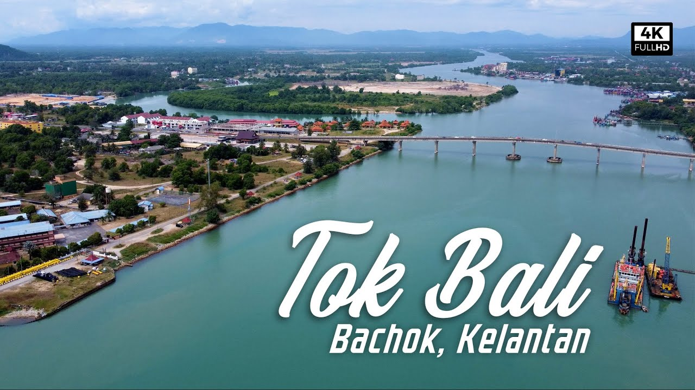

✍ KAMPUNG TOK BALI IN GENERAL ✍
In Kelantan, there is one place called Tok Bali which tourist should not miss to visit it. Tok Bali can be consider as one of the unique tourism spots in Kelantan which one of it is Kampung Tok Bali that located in Tok Bali area. This Village is got its own attraction and uniqueness because it is located near the small fishing port in Tok Bali, Kelantan, Malaysia. Compare to other village that located in rural areas, this village is located near the fishing port.
⏳ THE HISTORY OF KAMPUNG TOK BALI ⏳
The village name of Kampung Tok Bali is because of the village location that are in Tok Bali. The village is popular with their fishing port among Malaysian. As for the place of Tok Bali, the background of its name is believed that Tok Bali have been born from the story of an Indonesian sailor who drifted and was stranded on the beach. A sailing ship from Bali Indonesia has broken in the middle of the ocean causing the sailor to drift for months in the ocean. When he was stranded on the beach, barnacles were said to have filled his body. He started a new life with the locals. From this story Tok Bali got its name. Tok is a title for people who usually have a high level of religious knowledge. Bali is also the name of a place in the Indonesian Archipelago. The man's real name is unknown.
📍 THE LOCATION OF KAMPUNG TOK BALI 📍
Kampung Tok Bali is in Cherang Ruku, in the state of Kelantan Darul Naim, which is a state in northern Malaysia. Kelantan is a state in northern Malaysia, with an area of approximately 14,922 km². It is in the northeast of Peninsular Malaysia, facing the South China Sea, and bordering Narathiwat Province, Thailand. Kelantan is an agrarian (agricultural) state that has many crop areas.